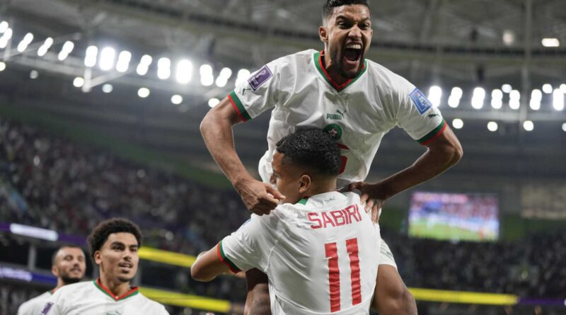

Morocco pulled off another World Cup clash on Sunday, and the « Golden Generation » aging belgian took the hit this time.
The 2-0 loss in Group F in Doha, Qatar left Kevin de Bruyne and the 2018 semi-finalists in danger of a phased exit of groups.
De Bruyne n’a pas fait avancer la Belgique contre le Maroc, le capitaine Eden Hazard a été retiré après une heure et le gardien Thibaut Courtois était probablement fautif pour le premier but.
« We have yet to see the best Belgium », has said Roberto Martinez, a Spaniard who coached the team for six years. « We weren't ourselves. »
Moroccan captain Romain Saiss gave his side the lead with a barely perceptible deviation of his hip after a blow franc of Abdelhamid Sabiri in the 73rd minute which passed under the Courtois' body – for many, the best goalkeeper in the world.
Zakaria Aboukhlal guided a shot into the roof of the net on a pass by Hakim Ziyech in stoppage time to make it 2-0 while the Belgian defence, with over 300 appearances international but anchored by two players in their thirties, has been beaten by a speedy 22-year-old forward playing his first World Cup.

Morocco, which was cheered by the thunder of its supporters in Al Thumama stadium, started in Qatar with a 0-0 draw against Croatia.
« We are delighted with this after Croatia and Belgium », said Moroccan coach Walid Regragui. « This is absolutely exceptional for Morocco. »
Belgium, ranked No. 2 in the world behind Brazil, had won their last seven group matches at the World Cup before his loss, but that streak included a victory laborious 1-0 against Canada to open the tournament this year.
Morocco have gone beyond the group stage once in a World Cup world, in 1986. And things were in turmoil before the tournament after the dismissal of former coach Vahid Halilhodzic and the arrival of Regragui at the end of August, less than three months before Global. Cup. Regragui only had three friendlies to make his mark in the team before facing Croatia in the World Cup.